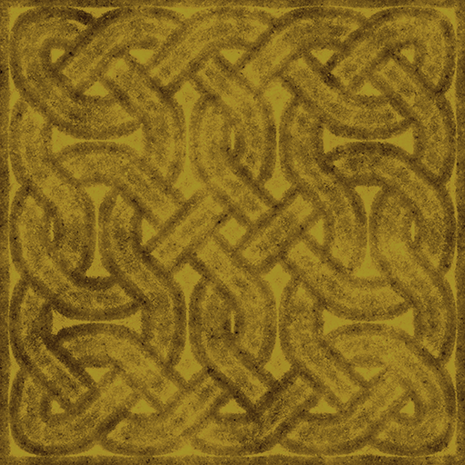
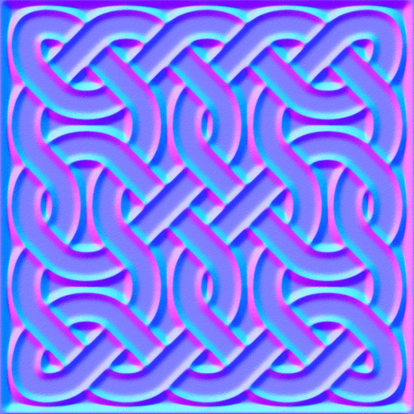
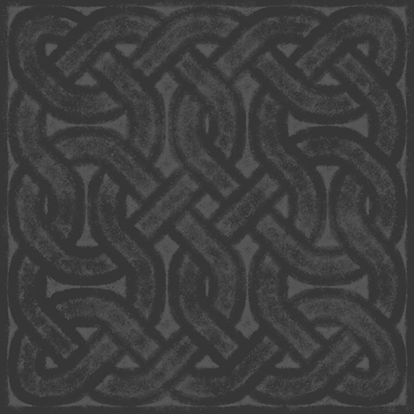
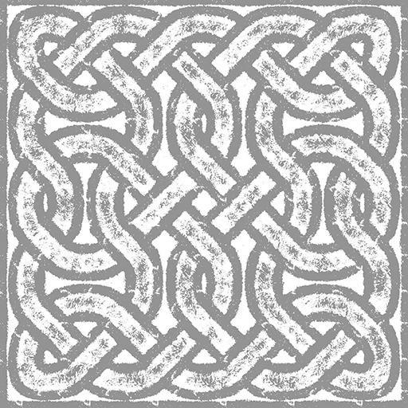
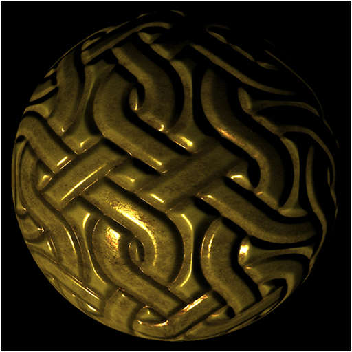
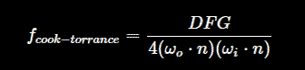
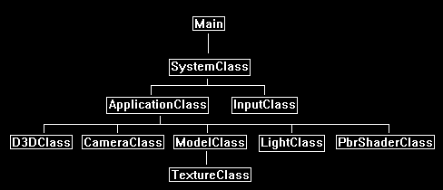

In this tutorial we will cover how to implement physically based rendering using DirectX 11, C++, and HLSL.
The code in this tutorial will be built on the code from the specular mapping tutorial 21.
Physically based rendering is a category of rendering techniques that focus on describing the physical properties of a surface to determine how light reacts to that surface.
For example, the roughness of a surface caused by microfacets forces light to scatter more randomly or get absorbed, and thus reduces the reflection of light.
And if we can describe a surface using a roughness texture, we can then use physically based math formulas to determine highly accurate specular light reflection.
For this tutorial we will be looking at a physically based rendering technique known as bidirectional reflective distribution function (BRDF).
With BRDF we can describe a surface using a roughness texture and a metallic texture to create highly realistic specular lighting.
So where traditionally an artist would have to manually author a specular texture, they can now use more modern tools such as Substance Painter and produce a roughness texture and metallic texture.
And with those two textures we can then let the shader calculate physically correct specular lighting.
So, when rendering a model, we will still use a diffuse color (albedo) texture and normal map, such as follows:


But now we will replace our specular map with the following roughness and metallic textures:


Then using the BRDF formula in our shading we can achieve highly realistic lighting such as the following:

Now the BRDF formula we will be using in this tutorial is one of the computationally fastest algorithms, and at that same time it also produces one of the better looking results.
And that is the Cook-Torrance specular BRDF.

Now what is interesting is that this formula is composed of three main components represented by DFG.
D is the normal distribution function, F is the Fresnel equation, and G is the geometry function.
For each of these functions there are numerous options you can pick from.
For example, with normal distribution function you can use Beckman NDF, Blinn-Phong NDF, Gaussian NDF, GGX NDF, Phong NDF, Trowbridge-Reitz NDF, Trowbridge-Reitz Anisotropic NDF, Ward Anisotropic NDF, and others.
It is very much plug and play in a sense.
For this tutorial I will use the most popular DFG functions, but I just want you to be aware that there are many other functions available.
Framework
The framework for this tutorial is similar to the specular mapping tutorial 21.
But we have replaced the SpecMapShaderClass with the PbrShaderClass.

We will start the tutorial by looking at the PBR HLSL shader code:
Pbr.vs
The PBR vertex shader is going to be the same as a regular normal map/specular map vertex shader.
It will do the work of transforming the normals, binormals, tangents, and viewing direction.
////////////////////////////////////////////////////////////////////////////////
// Filename: pbr.vs
////////////////////////////////////////////////////////////////////////////////
/////////////
// GLOBALS //
/////////////
cbuffer MatrixBuffer
{
matrix worldMatrix;
matrix viewMatrix;
matrix projectionMatrix;
};
cbuffer CameraBuffer
{
float3 cameraPosition;
float padding;
};
//////////////
// TYPEDEFS //
//////////////
struct VertexInputType
{
float4 position : POSITION;
float2 tex : TEXCOORD0;
float3 normal : NORMAL;
float3 tangent : TANGENT;
float3 binormal : BINORMAL;
};
struct PixelInputType
{
float4 position : SV_POSITION;
float2 tex : TEXCOORD0;
float3 normal : NORMAL;
float3 tangent : TANGENT;
float3 binormal : BINORMAL;
float3 viewDirection : TEXCOORD1;
};
////////////////////////////////////////////////////////////////////////////////
// Vertex Shader
////////////////////////////////////////////////////////////////////////////////
PixelInputType PbrVertexShader(VertexInputType input)
{
PixelInputType output;
float4 worldPosition;
// Change the position vector to be 4 units for proper matrix calculations.
input.position.w = 1.0f;
// Calculate the position of the vertex against the world, view, and projection matrices.
output.position = mul(input.position, worldMatrix);
output.position = mul(output.position, viewMatrix);
output.position = mul(output.position, projectionMatrix);
// Store the texture coordinates for the pixel shader.
output.tex = input.tex;
// Calculate the normal vector against the world matrix only and then normalize the final value.
output.normal = mul(input.normal, (float3x3)worldMatrix);
output.normal = normalize(output.normal);
// Calculate the tangent vector against the world matrix only and then normalize the final value.
output.tangent = mul(input.tangent, (float3x3)worldMatrix);
output.tangent = normalize(output.tangent);
// Calculate the binormal vector against the world matrix only and then normalize the final value.
output.binormal = mul(input.binormal, (float3x3)worldMatrix);
output.binormal = normalize(output.binormal);
// Calculate the position of the vertex in the world.
worldPosition = mul(input.position, worldMatrix);
// Determine the viewing direction based on the position of the camera and the position of the vertex in the world.
output.viewDirection = cameraPosition.xyz - worldPosition.xyz;
// Normalize the viewing direction vector.
output.viewDirection = normalize(output.viewDirection);
return output;
}
Pbr.ps
////////////////////////////////////////////////////////////////////////////////
// Filename: pbr.ps
////////////////////////////////////////////////////////////////////////////////
/////////////
// GLOBALS //
/////////////
For textures we have our regular color texture as well as our normal map texture.
The new texture for the PBR shader will be the rmTexture which will store the roughness in the red channel, and the metallic in the blue channel.
Texture2D diffuseTexture : register(t0);
Texture2D normalMap : register(t1);
Texture2D rmTexture : register(t2);
SamplerState SampleType : register(s0);
cbuffer LightBuffer
{
float3 lightDirection;
float padding;
};
//////////////
// TYPEDEFS //
//////////////
struct PixelInputType
{
float4 position : SV_POSITION;
float2 tex : TEXCOORD0;
float3 normal : NORMAL;
float3 tangent : TANGENT;
float3 binormal : BINORMAL;
float3 viewDirection : TEXCOORD1;
};
////////////////////////////////////////////////////////////////////////////////
// Pixel Shader
////////////////////////////////////////////////////////////////////////////////
float4 PbrPixelShader(PixelInputType input) : SV_TARGET
{
float3 lightDir;
float3 albedo, rmColor, bumpMap;
float3 bumpNormal;
float roughness, metallic;
float3 F0;
float3 halfDirection;
float NdotH, NdotV, NdotL, HdotV;
float roughnessSqr, roughSqr2, NdotHSqr, denominator, normalDistribution;
float smithL, smithV, geometricShadow;
float3 fresnel;
float3 specularity;
float4 color;
// Invert the light direction for calculations.
lightDir = -lightDirection;
Sample the three textures.
// Sample the textures.
albedo = diffuseTexture.Sample(SampleType, input.tex).rgb;
rmColor = rmTexture.Sample(SampleType, input.tex).rgb;
bumpMap = normalMap.Sample(SampleType, input.tex).rgb;
Perform normal mapping as per usual for a normal or specular map shader.
// Calculate the normal using the normal map.
bumpMap = (bumpMap * 2.0f) - 1.0f;
bumpNormal = (bumpMap.x * input.tangent) + (bumpMap.y * input.binormal) + (bumpMap.z * input.normal);
bumpNormal = normalize(bumpNormal);
Extract the roughness and metallic value from the rmTexture that we sampled.
// Get the metalic and roughness from the roughness/metalness texture.
roughness = rmColor.r;
metallic = rmColor.b;
Note that the F0 for the fresnel has been manually set to 0.04 as this is generally one of the best for all metals.
But there are tables for all the different metals if you want to get something more exact.
// Surface reflection at zero degress. Combine with albedo based on metal. Needed for fresnel calculation.
F0 = float3(0.04f, 0.04f, 0.04f);
F0 = lerp(F0, albedo, metallic);
Setup all the vectors we are going to need for our calculations.
// Setup the vectors needed for lighting calculations.
halfDirection = normalize(input.viewDirection + lightDir);
NdotH = max(0.0f, dot(bumpNormal, halfDirection));
NdotV = max(0.0f, dot(bumpNormal, input.viewDirection));
NdotL = max(0.0f, dot(bumpNormal, lightDir));
HdotV = max(0.0f, dot(halfDirection, input.viewDirection));
We will use GGX for our normal distribution function calculation.
// GGX normal distribution calculation.
roughnessSqr = roughness * roughness;
roughSqr2 = roughnessSqr * roughnessSqr;
NdotHSqr = NdotH * NdotH;
denominator = (NdotHSqr * (roughSqr2 - 1.0f) + 1.0f);
denominator = 3.14159265359f * (denominator * denominator);
normalDistribution = roughSqr2 / denominator;
We will use Schlick-GGX for our geometry function calculation.
// Schlick geometric shadow calculation.
smithL = NdotL / (NdotL * (1.0f - roughnessSqr) + roughnessSqr);
smithV = NdotV / (NdotV * (1.0f - roughnessSqr) + roughnessSqr);
geometricShadow = smithL * smithV;
We will use Fresnel Schlick for the fresnel calculation.
// Fresnel shlick approximation for fresnel term calculation.
fresnel = F0 + (1.0f - F0) * pow(1.0f - HdotV, 5.0f);
With the DFG variables calculated we can now perform the Cook-Torrance specular BRDF calculation.
Do note we need to add a small offset to the denominator to prevent divide by zero in HLSL.
If we don't, we will get incorrect black patches in certain areas.
// Now calculate the bidirectional reflectance distribution function.
specularity = (normalDistribution * fresnel * geometricShadow) / ((4.0f * (NdotL * NdotV)) + 0.00001f);
// Final light equation.
color.rgb = albedo + specularity;
color.rgb = color.rgb * NdotL;
// Set the alpha to 1.0f.
color = float4(color.rgb, 1.0f);
return color;
}
Pbrshaderclass.h
The PbrShaderClass is almost identical to our regular specular map shader.
However, we won't need all of the specular light values since the roughness and metallic texture will be used to calculate the PBR specularity.
////////////////////////////////////////////////////////////////////////////////
// Filename: pbrshaderclass.h
////////////////////////////////////////////////////////////////////////////////
#ifndef _PBRSHADERCLASS_H_
#define _PBRSHADERCLASS_H_
//////////////
// INCLUDES //
//////////////
#include <d3d11.h>
#include <d3dcompiler.h>
#include <directxmath.h>
#include <fstream>
using namespace DirectX;
using namespace std;
////////////////////////////////////////////////////////////////////////////////
// Class name: PbrShaderClass
////////////////////////////////////////////////////////////////////////////////
class PbrShaderClass
{
private:
struct MatrixBufferType
{
XMMATRIX world;
XMMATRIX view;
XMMATRIX projection;
};
struct CameraBufferType
{
XMFLOAT3 cameraPosition;
float padding;
};
struct LightBufferType
{
XMFLOAT3 lightDirection;
float padding
};
public:
PbrShaderClass();
PbrShaderClass(const PbrShaderClass&);
~PbrShaderClass();
bool Initialize(ID3D11Device*, HWND);
void Shutdown();
bool Render(ID3D11DeviceContext*, int, XMMATRIX, XMMATRIX, XMMATRIX, ID3D11ShaderResourceView*, ID3D11ShaderResourceView*, ID3D11ShaderResourceView*,
XMFLOAT3, XMFLOAT3);
private:
bool InitializeShader(ID3D11Device*, HWND, WCHAR*, WCHAR*);
void ShutdownShader();
void OutputShaderErrorMessage(ID3D10Blob*, HWND, WCHAR*);
bool SetShaderParameters(ID3D11DeviceContext*, XMMATRIX, XMMATRIX, XMMATRIX, ID3D11ShaderResourceView*, ID3D11ShaderResourceView*, ID3D11ShaderResourceView*,
XMFLOAT3, XMFLOAT3);
void RenderShader(ID3D11DeviceContext*, int);
private:
ID3D11VertexShader* m_vertexShader;
ID3D11PixelShader* m_pixelShader;
ID3D11InputLayout* m_layout;
ID3D11SamplerState* m_sampleState;
ID3D11Buffer* m_matrixBuffer;
ID3D11Buffer* m_cameraBuffer;
ID3D11Buffer* m_lightBuffer;
};
#endif
Pbrshaderclass.cpp
////////////////////////////////////////////////////////////////////////////////
// Filename: pbrshaderclass.cpp
////////////////////////////////////////////////////////////////////////////////
#include "pbrshaderclass.h"
PbrShaderClass::PbrShaderClass()
{
m_vertexShader = 0;
m_pixelShader = 0;
m_layout = 0;
m_sampleState = 0;
m_matrixBuffer = 0;
m_cameraBuffer = 0;
m_lightBuffer = 0;
}
PbrShaderClass::PbrShaderClass(const PbrShaderClass& other)
{
}
PbrShaderClass::~PbrShaderClass()
{
}
bool PbrShaderClass::Initialize(ID3D11Device* device, HWND hwnd)
{
wchar_t vsFilename[128], psFilename[128];
bool result;
int error;
// Set the filename of the vertex shader.
error = wcscpy_s(vsFilename, 128, L"../Engine/pbr.vs");
if(error != 0)
{
return false;
}
// Set the filename of the pixel shader.
error = wcscpy_s(psFilename, 128, L"../Engine/pbr.ps");
if(error != 0)
{
return false;
}
// Initialize the vertex and pixel shaders.
result = InitializeShader(device, hwnd, vsFilename, psFilename);
if(!result)
{
return false;
}
return true;
}
void PbrShaderClass::Shutdown()
{
// Shutdown the vertex and pixel shaders as well as the related objects.
ShutdownShader();
return;
}
bool PbrShaderClass::Render(ID3D11DeviceContext* deviceContext, int indexCount, XMMATRIX worldMatrix, XMMATRIX viewMatrix, XMMATRIX projectionMatrix,
ID3D11ShaderResourceView* diffuseTexture, ID3D11ShaderResourceView* normalMap, ID3D11ShaderResourceView* rmTexture,
XMFLOAT3 lightDirection, XMFLOAT3 cameraPosition)
{
bool result;
// Set the shader parameters that it will use for rendering.
result = SetShaderParameters(deviceContext, worldMatrix, viewMatrix, projectionMatrix, diffuseTexture, normalMap, rmTexture, lightDirection, cameraPosition);
if(!result)
{
return false;
}
// Now render the prepared buffers with the shader.
RenderShader(deviceContext, indexCount);
return true;
}
bool PbrShaderClass::InitializeShader(ID3D11Device* device, HWND hwnd, WCHAR* vsFilename, WCHAR* psFilename)
{
HRESULT result;
ID3D10Blob* errorMessage;
ID3D10Blob* vertexShaderBuffer;
ID3D10Blob* pixelShaderBuffer;
D3D11_INPUT_ELEMENT_DESC polygonLayout[5];
unsigned int numElements;
D3D11_SAMPLER_DESC samplerDesc;
D3D11_BUFFER_DESC matrixBufferDesc;
D3D11_BUFFER_DESC cameraBufferDesc;
D3D11_BUFFER_DESC lightBufferDesc;
// Initialize the pointers this function will use to null.
errorMessage = 0;
vertexShaderBuffer = 0;
pixelShaderBuffer = 0;
// Compile the vertex shader code.
result = D3DCompileFromFile(vsFilename, NULL, NULL, "PbrVertexShader", "vs_5_0", D3D10_SHADER_ENABLE_STRICTNESS, 0, &vertexShaderBuffer, &errorMessage);
if(FAILED(result))
{
// If the shader failed to compile it should have writen something to the error message.
if(errorMessage)
{
OutputShaderErrorMessage(errorMessage, hwnd, vsFilename);
}
// If there was nothing in the error message then it simply could not find the shader file itself.
else
{
MessageBox(hwnd, vsFilename, L"Missing Shader File", MB_OK);
}
return false;
}
// Compile the pixel shader code.
result = D3DCompileFromFile(psFilename, NULL, NULL, "PbrPixelShader", "ps_5_0", D3D10_SHADER_ENABLE_STRICTNESS, 0, &pixelShaderBuffer, &errorMessage);
if(FAILED(result))
{
// If the shader failed to compile it should have writen something to the error message.
if(errorMessage)
{
OutputShaderErrorMessage(errorMessage, hwnd, psFilename);
}
// If there was nothing in the error message then it simply could not find the file itself.
else
{
MessageBox(hwnd, psFilename, L"Missing Shader File", MB_OK);
}
return false;
}
// Create the vertex shader from the buffer.
result = device->CreateVertexShader(vertexShaderBuffer->GetBufferPointer(), vertexShaderBuffer->GetBufferSize(), NULL, &m_vertexShader);
if(FAILED(result))
{
return false;
}
// Create the pixel shader from the buffer.
result = device->CreatePixelShader(pixelShaderBuffer->GetBufferPointer(), pixelShaderBuffer->GetBufferSize(), NULL, &m_pixelShader);
if(FAILED(result))
{
return false;
}
// Create the vertex input layout description.
polygonLayout[0].SemanticName = "POSITION";
polygonLayout[0].SemanticIndex = 0;
polygonLayout[0].Format = DXGI_FORMAT_R32G32B32_FLOAT;
polygonLayout[0].InputSlot = 0;
polygonLayout[0].AlignedByteOffset = 0;
polygonLayout[0].InputSlotClass = D3D11_INPUT_PER_VERTEX_DATA;
polygonLayout[0].InstanceDataStepRate = 0;
polygonLayout[1].SemanticName = "TEXCOORD";
polygonLayout[1].SemanticIndex = 0;
polygonLayout[1].Format = DXGI_FORMAT_R32G32_FLOAT;
polygonLayout[1].InputSlot = 0;
polygonLayout[1].AlignedByteOffset = D3D11_APPEND_ALIGNED_ELEMENT;
polygonLayout[1].InputSlotClass = D3D11_INPUT_PER_VERTEX_DATA;
polygonLayout[1].InstanceDataStepRate = 0;
polygonLayout[2].SemanticName = "NORMAL";
polygonLayout[2].SemanticIndex = 0;
polygonLayout[2].Format = DXGI_FORMAT_R32G32B32_FLOAT;
polygonLayout[2].InputSlot = 0;
polygonLayout[2].AlignedByteOffset = D3D11_APPEND_ALIGNED_ELEMENT;
polygonLayout[2].InputSlotClass = D3D11_INPUT_PER_VERTEX_DATA;
polygonLayout[2].InstanceDataStepRate = 0;
polygonLayout[3].SemanticName = "TANGENT";
polygonLayout[3].SemanticIndex = 0;
polygonLayout[3].Format = DXGI_FORMAT_R32G32B32_FLOAT;
polygonLayout[3].InputSlot = 0;
polygonLayout[3].AlignedByteOffset = D3D11_APPEND_ALIGNED_ELEMENT;
polygonLayout[3].InputSlotClass = D3D11_INPUT_PER_VERTEX_DATA;
polygonLayout[3].InstanceDataStepRate = 0;
polygonLayout[4].SemanticName = "BINORMAL";
polygonLayout[4].SemanticIndex = 0;
polygonLayout[4].Format = DXGI_FORMAT_R32G32B32_FLOAT;
polygonLayout[4].InputSlot = 0;
polygonLayout[4].AlignedByteOffset = D3D11_APPEND_ALIGNED_ELEMENT;
polygonLayout[4].InputSlotClass = D3D11_INPUT_PER_VERTEX_DATA;
polygonLayout[4].InstanceDataStepRate = 0;
// Get a count of the elements in the layout.
numElements = sizeof(polygonLayout) / sizeof(polygonLayout[0]);
// Create the vertex input layout.
result = device->CreateInputLayout(polygonLayout, numElements, vertexShaderBuffer->GetBufferPointer(), vertexShaderBuffer->GetBufferSize(),
&m_layout);
if(FAILED(result))
{
return false;
}
// Release the vertex shader buffer and pixel shader buffer since they are no longer needed.
vertexShaderBuffer->Release();
vertexShaderBuffer = 0;
pixelShaderBuffer->Release();
pixelShaderBuffer = 0;
// Create a texture sampler state description.
samplerDesc.Filter = D3D11_FILTER_MIN_MAG_MIP_LINEAR;
samplerDesc.AddressU = D3D11_TEXTURE_ADDRESS_WRAP;
samplerDesc.AddressV = D3D11_TEXTURE_ADDRESS_WRAP;
samplerDesc.AddressW = D3D11_TEXTURE_ADDRESS_WRAP;
samplerDesc.MipLODBias = 0.0f;
samplerDesc.MaxAnisotropy = 1;
samplerDesc.ComparisonFunc = D3D11_COMPARISON_ALWAYS;
samplerDesc.BorderColor[0] = 0;
samplerDesc.BorderColor[1] = 0;
samplerDesc.BorderColor[2] = 0;
samplerDesc.BorderColor[3] = 0;
samplerDesc.MinLOD = 0;
samplerDesc.MaxLOD = D3D11_FLOAT32_MAX;
// Create the texture sampler state.
result = device->CreateSamplerState(&samplerDesc, &m_sampleState);
if(FAILED(result))
{
return false;
}
// Setup the description of the dynamic matrix constant buffer that is in the vertex shader.
matrixBufferDesc.Usage = D3D11_USAGE_DYNAMIC;
matrixBufferDesc.ByteWidth = sizeof(MatrixBufferType);
matrixBufferDesc.BindFlags = D3D11_BIND_CONSTANT_BUFFER;
matrixBufferDesc.CPUAccessFlags = D3D11_CPU_ACCESS_WRITE;
matrixBufferDesc.MiscFlags = 0;
matrixBufferDesc.StructureByteStride = 0;
// Create the constant buffer pointer so we can access the vertex shader constant buffer from within this class.
result = device->CreateBuffer(&matrixBufferDesc, NULL, &m_matrixBuffer);
if(FAILED(result))
{
return false;
}
// Setup the description of the camera dynamic constant buffer that is in the vertex shader.
cameraBufferDesc.Usage = D3D11_USAGE_DYNAMIC;
cameraBufferDesc.ByteWidth = sizeof(CameraBufferType);
cameraBufferDesc.BindFlags = D3D11_BIND_CONSTANT_BUFFER;
cameraBufferDesc.CPUAccessFlags = D3D11_CPU_ACCESS_WRITE;
cameraBufferDesc.MiscFlags = 0;
cameraBufferDesc.StructureByteStride = 0;
// Create the camera constant buffer pointer so we can access the vertex shader constant buffer from within this class.
result = device->CreateBuffer(&cameraBufferDesc, NULL, &m_cameraBuffer);
if(FAILED(result))
{
return false;
}
// Setup the description of the light dynamic constant buffer that is in the pixel shader.
lightBufferDesc.Usage = D3D11_USAGE_DYNAMIC;
lightBufferDesc.ByteWidth = sizeof(LightBufferType);
lightBufferDesc.BindFlags = D3D11_BIND_CONSTANT_BUFFER;
lightBufferDesc.CPUAccessFlags = D3D11_CPU_ACCESS_WRITE;
lightBufferDesc.MiscFlags = 0;
lightBufferDesc.StructureByteStride = 0;
// Create the constant buffer pointer so we can access the vertex shader constant buffer from within this class.
result = device->CreateBuffer(&lightBufferDesc, NULL, &m_lightBuffer);
if(FAILED(result))
{
return false;
}
return true;
}
void PbrShaderClass::ShutdownShader()
{
// Release the light constant buffer.
if(m_lightBuffer)
{
m_lightBuffer->Release();
m_lightBuffer = 0;
}
// Release the camera constant buffer.
if(m_cameraBuffer)
{
m_cameraBuffer->Release();
m_cameraBuffer = 0;
}
// Release the matrix constant buffer.
if(m_matrixBuffer)
{
m_matrixBuffer->Release();
m_matrixBuffer = 0;
}
// Release the sampler state.
if(m_sampleState)
{
m_sampleState->Release();
m_sampleState = 0;
}
// Release the layout.
if(m_layout)
{
m_layout->Release();
m_layout = 0;
}
// Release the pixel shader.
if(m_pixelShader)
{
m_pixelShader->Release();
m_pixelShader = 0;
}
// Release the vertex shader.
if(m_vertexShader)
{
m_vertexShader->Release();
m_vertexShader = 0;
}
return;
}
void PbrShaderClass::OutputShaderErrorMessage(ID3D10Blob* errorMessage, HWND hwnd, WCHAR* shaderFilename)
{
char* compileErrors;
unsigned __int64 bufferSize, i;
ofstream fout;
// Get a pointer to the error message text buffer.
compileErrors = (char*)(errorMessage->GetBufferPointer());
// Get the length of the message.
bufferSize = errorMessage->GetBufferSize();
// Open a file to write the error message to.
fout.open("shader-error.txt");
// Write out the error message.
for(i=0; i<bufferSize; i++)
{
fout << compileErrors[i];
}
// Close the file.
fout.close();
// Release the error message.
errorMessage->Release();
errorMessage = 0;
// Pop a message up on the screen to notify the user to check the text file for compile errors.
MessageBox(hwnd, L"Error compiling shader. Check shader-error.txt for message.", shaderFilename, MB_OK);
return;
}
bool PbrShaderClass::SetShaderParameters(ID3D11DeviceContext* deviceContext, XMMATRIX worldMatrix, XMMATRIX viewMatrix, XMMATRIX projectionMatrix,
ID3D11ShaderResourceView* diffuseTexture, ID3D11ShaderResourceView* normalMap, ID3D11ShaderResourceView* rmTexture,
XMFLOAT3 lightDirection, XMFLOAT3 cameraPosition)
{
HRESULT result;
D3D11_MAPPED_SUBRESOURCE mappedResource;
unsigned int bufferNumber;
MatrixBufferType* dataPtr;
LightBufferType* dataPtr2;
CameraBufferType* dataPtr3;
// Transpose the matrices to prepare them for the shader.
worldMatrix = XMMatrixTranspose(worldMatrix);
viewMatrix = XMMatrixTranspose(viewMatrix);
projectionMatrix = XMMatrixTranspose(projectionMatrix);
// Lock the constant buffer so it can be written to.
result = deviceContext->Map(m_matrixBuffer, 0, D3D11_MAP_WRITE_DISCARD, 0, &mappedResource);
if(FAILED(result))
{
return false;
}
// Get a pointer to the data in the constant buffer.
dataPtr = (MatrixBufferType*)mappedResource.pData;
// Copy the matrices into the constant buffer.
dataPtr->world = worldMatrix;
dataPtr->view = viewMatrix;
dataPtr->projection = projectionMatrix;
// Unlock the constant buffer.
deviceContext->Unmap(m_matrixBuffer, 0);
// Set the position of the constant buffer in the vertex shader.
bufferNumber = 0;
// Now set the constant buffer in the vertex shader with the updated values.
deviceContext->VSSetConstantBuffers(bufferNumber, 1, &m_matrixBuffer);
// Lock the camera constant buffer so it can be written to.
result = deviceContext->Map(m_cameraBuffer, 0, D3D11_MAP_WRITE_DISCARD, 0, &mappedResource);
if(FAILED(result))
{
return false;
}
// Get a pointer to the data in the constant buffer.
dataPtr3 = (CameraBufferType*)mappedResource.pData;
// Copy the camera position into the constant buffer.
dataPtr3->cameraPosition = cameraPosition;
dataPtr3->padding = 0.0f;
// Unlock the camera constant buffer.
deviceContext->Unmap(m_cameraBuffer, 0);
// Set the position of the camera constant buffer in the vertex shader.
bufferNumber = 1;
// Now set the camera constant buffer in the vertex shader with the updated values.
deviceContext->VSSetConstantBuffers(bufferNumber, 1, &m_cameraBuffer);
// Set shader texture resource in the pixel shader.
deviceContext->PSSetShaderResources(0, 1, &diffuseTexture);
deviceContext->PSSetShaderResources(1, 1, &normalMap);
Setting the roughness and metallic texture replaces setting our specular lighting variables for PBR.
deviceContext->PSSetShaderResources(2, 1, &rmTexture);
// Lock the light constant buffer so it can be written to.
result = deviceContext->Map(m_lightBuffer, 0, D3D11_MAP_WRITE_DISCARD, 0, &mappedResource);
if(FAILED(result))
{
return false;
}
// Get a pointer to the data in the constant buffer.
dataPtr2 = (LightBufferType*)mappedResource.pData;
// Copy the lighting variables into the constant buffer.
dataPtr2->lightDirection = lightDirection;
dataPtr2->padding = 0.0f;
// Unlock the constant buffer.
deviceContext->Unmap(m_lightBuffer, 0);
// Set the position of the light constant buffer in the pixel shader.
bufferNumber = 0;
// Finally set the light constant buffer in the pixel shader with the updated values.
deviceContext->PSSetConstantBuffers(bufferNumber, 1, &m_lightBuffer);
return true;
}
void PbrShaderClass::RenderShader(ID3D11DeviceContext* deviceContext, int indexCount)
{
// Set the vertex input layout.
deviceContext->IASetInputLayout(m_layout);
// Set the vertex and pixel shaders that will be used to render.
deviceContext->VSSetShader(m_vertexShader, NULL, 0);
deviceContext->PSSetShader(m_pixelShader, NULL, 0);
// Set the sampler state in the pixel shader.
deviceContext->PSSetSamplers(0, 1, &m_sampleState);
// Render the geometry.
deviceContext->DrawIndexed(indexCount, 0, 0);
return;
}
Applicationclass.h
////////////////////////////////////////////////////////////////////////////////
// Filename: applicationclass.h
////////////////////////////////////////////////////////////////////////////////
#ifndef _APPLICATIONCLASS_H_
#define _APPLICATIONCLASS_H_
/////////////
// GLOBALS //
/////////////
const bool FULL_SCREEN = false;
const bool VSYNC_ENABLED = true;
const float SCREEN_NEAR = 0.3f;
const float SCREEN_DEPTH = 1000.0f;
///////////////////////
// MY CLASS INCLUDES //
///////////////////////
#include "d3dclass.h"
#include "inputclass.h"
#include "cameraclass.h"
#include "modelclass.h"
#include "lightclass.h"
Add the include for the new PBR shader class.
#include "pbrshaderclass.h"
////////////////////////////////////////////////////////////////////////////////
// Class name: ApplicationClass
////////////////////////////////////////////////////////////////////////////////
class ApplicationClass
{
public:
ApplicationClass();
ApplicationClass(const ApplicationClass&);
~ApplicationClass();
bool Initialize(int, int, HWND);
void Shutdown();
bool Frame(InputClass*);
private:
bool Render(float);
private:
D3DClass* m_Direct3D;
CameraClass* m_Camera;
ModelClass* m_Model;
LightClass* m_Light;
Add the PBR shader class object to our application class.
PbrShaderClass* m_PbrShader;
};
#endif
Applicationclass.cpp
////////////////////////////////////////////////////////////////////////////////
// Filename: applicationclass.cpp
////////////////////////////////////////////////////////////////////////////////
#include "applicationclass.h"
ApplicationClass::ApplicationClass()
{
m_Direct3D = 0;
m_Camera = 0;
m_Model = 0;
m_Light = 0;
m_PbrShader = 0;
}
ApplicationClass::ApplicationClass(const ApplicationClass& other)
{
}
ApplicationClass::~ApplicationClass()
{
}
bool ApplicationClass::Initialize(int screenWidth, int screenHeight, HWND hwnd)
{
char modelFilename[128], diffuseFilename[128], normalFilename[128], rmFilename[128];
bool result;
// Create and initialize the Direct3D object.
m_Direct3D = new D3DClass;
result = m_Direct3D->Initialize(screenWidth, screenHeight, VSYNC_ENABLED, hwnd, FULL_SCREEN, SCREEN_DEPTH, SCREEN_NEAR);
if(!result)
{
MessageBox(hwnd, L"Could not initialize Direct3D.", L"Error", MB_OK);
return false;
}
// Create and initialize the camera object.
m_Camera = new CameraClass;
m_Camera->SetPosition(0.0f, 0.0f, -5.0f);
m_Camera->Render();
When we set the light, we only need the direction now.
No other specular light variables will be required.
// Create and initialize the light object.
m_Light = new LightClass;
m_Light->SetDirection(0.5f, 0.5f, 0.5f);
Create our sphere model with the diffuse, normal, and roughness/metallic textures.
// Create and initialize the sphere model object.
m_Model = new ModelClass;
strcpy_s(modelFilename, "../Engine/data/sphere.txt");
strcpy_s(diffuseFilename, "../Engine/data/pbr_albedo.tga");
strcpy_s(normalFilename, "../Engine/data/pbr_normal.tga");
strcpy_s(rmFilename, "../Engine/data/pbr_roughmetal.tga");
result = m_Model->Initialize(m_Direct3D->GetDevice(), m_Direct3D->GetDeviceContext(), modelFilename, diffuseFilename, normalFilename, rmFilename);
if(!result)
{
MessageBox(hwnd, L"Could not initialize the model object.", L"Error", MB_OK);
return false;
}
Create our new PBR shader class object here.
// Create the PBR shader object.
m_PbrShader = new PbrShaderClass;
result = m_PbrShader->Initialize(m_Direct3D->GetDevice(), hwnd);
if(!result)
{
MessageBox(hwnd, L"Could not initialize the PBR shader object.", L"Error", MB_OK);
return false;
}
return true;
}
void ApplicationClass::Shutdown()
{
// Release the PBR shader object.
if(m_PbrShader)
{
m_PbrShader->Shutdown();
delete m_PbrShader;
m_PbrShader = 0;
}
// Release the light object.
if(m_Light)
{
delete m_Light;
m_Light = 0;
}
// Release the model object.
if(m_Model)
{
m_Model->Shutdown();
delete m_Model;
m_Model = 0;
}
// Release the camera object.
if(m_Camera)
{
delete m_Camera;
m_Camera = 0;
}
// Release the Direct3D object.
if(m_Direct3D)
{
m_Direct3D->Shutdown();
delete m_Direct3D;
m_Direct3D = 0;
}
return;
}
bool ApplicationClass::Frame(InputClass* Input)
{
static float rotation = 0.0f;
bool result;
// Check if the escape key has been pressed, if so quit.
if(Input->IsEscapePressed() == true)
{
return false;
}
// Update the rotation variable each frame.
rotation -= 0.0174532925f * 0.1f;
if(rotation < 0.0f)
{
rotation += 360.0f;
}
// Render the final graphics scene.
result = Render(rotation);
if(!result)
{
return false;
}
return true;
}
bool ApplicationClass::Render(float rotation)
{
XMMATRIX worldMatrix, viewMatrix, projectionMatrix;
bool result;
// Clear the buffers to begin the scene.
m_Direct3D->BeginScene(0.0f, 0.0f, 0.0f, 1.0f);
// Generate the view matrix based on the camera's position.
m_Camera->Render();
// Get the world, view, and projection matrices from the camera and d3d objects.
m_Direct3D->GetWorldMatrix(worldMatrix);
m_Camera->GetViewMatrix(viewMatrix);
m_Direct3D->GetProjectionMatrix(projectionMatrix);
// Rotate the world matrix by the rotation value so that the model will spin.
worldMatrix = XMMatrixRotationY(rotation);
Render the model using the PBR shader and the textures from the model object.
// Put the model vertex and index buffers on the graphics pipeline to prepare them for drawing.
m_Model->Render(m_Direct3D->GetDeviceContext());
// Render the model using the PBR shader.
result = m_PbrShader->Render(m_Direct3D->GetDeviceContext(), m_Model->GetIndexCount(), worldMatrix, viewMatrix, projectionMatrix, m_Model->GetTexture(0), m_Model->GetTexture(1),
m_Model->GetTexture(2), m_Light->GetDirection(), m_Camera->GetPosition());
if(!result)
{
return false;
}
// Present the rendered scene to the screen.
m_Direct3D->EndScene();
return true;
}
Summary
With the use of PBR rendering we can have highly realistic specular reflections.
Great sites like FreePBR offer great texture resources for learning and experimenting with PBR rendering.
They also have higher resolution textures which makes a huge difference in the graphical fidelity of the PBR effect.
Do note most textures on sites like this are usually are exported in "OpenGL" format.
If so the green/Y channel needs to be inverted to change from right-handed to left-handed normal map coordinates.
Also, both the roughness and metallic texture are single channel grey scale images.
So, you need to create a new texture and put them on the red and blue channels if you are using this PBR shader unedited.
To Do Exercises
1. Compile and run the program to see a rotating sphere rendered using physically based rendering. Press escape to quit.
2. Download some textures from the FreePBR website and try them out using the PBR shader.
3. Replace the normal distribution, geometry shadow, and fresnel sections of code with functions for each.
4. Research the different normal distribution and geometry functions to see the differences they can offer to your PBR shaders.
5. Render two spheres at the same time with the PBR shader, but each sphere rendered with different NDF and geometry shadow functions to see the difference.
Source Code
Source Code and Data Files: dx11win10tut52_src.zip